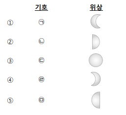

1. 여러 가지 원소 중 이름과 기호 연결이 옳은 것은? [2점]
① 수소 - H
② 질소 - O
③ 탄소 - N
④ 헬륨 - Al
⑤ 알루미늄 - He
2.아래 두 분자 모형의 이름으로 가장 적절한 것은? [2점]

㉠ ㉡
① 수소 산소
② 산소 물
③ 물 일산화탄소
④ 산소 암모니아
⑤ 일산화탄소 암모니아
3. 원소에 대한 설명으로 옳은 것만을 <보기>에서 있는 대로 고른 것은? [3점]
<보 기>
㉠ 모든 물질은 원소로 이루어져 있다.
㉡ 자연에서 발견된 118개의 원소로 구성
되어 있다.
㉢ 원소마다 고유의 선스펙트럼을 가지고 있다.
① ㉠
② ㉡
③ ㉠, ㉡
④ ㉠, ㉢
⑤ ㉠, ㉡, ㉢
4. 여러 가지 물질 속에 들어있는 원소를 조사한 것이다. 이 중 잘못된 것은? [2점]
물질 들어 있는 원소
① 유리컵 --- 규소, 산소
② 물 --- 산소, 수소
③ 비닐 --- 탄소, 수소, 염소
④ 공기 --- 질소, 산소
⑤ 지우개 --- 황, 질소, 고무
5. 이온과 이온의 형성 과정에 대한 설명으로 옳지 않은 것은? [3점]
① 원자핵의 전하가 이동하여 양이온이 된다.
② 원자가 전자를 잃거나 얻어서 이온이 된다.
③ 양이온은 원소 이름 뒤에 ‘이온’을 붙여 부른다.
④ 앙금 생성 반응을 이용하여 수용액 속에 들어있는 이온을 확인할 수 있다.
⑤ 원자의 종류에 따라 양이온이 되기 쉬운 원소와 음이온이 되기 쉬운 원소가 정해져 있다.
6. 그림은 A와 B의 두 원자로 구성된 어떤 분자의 모형이다. 이 분자의 분자식으로 옳은 것은? [3점]
7. 어떤 원자가 이온이 되는 과정을 나타낸 모형이다. 이온의 표시와 이름을 잘 연결한 것은? [3점]
8. 어떤 분자의 분자식이 다음과 같을 때 이를 보고 알 수 있는 것이 아닌 것은? [2점]
3CO2
① 분자의 이름
② 분자의 개수
③ 분자의 상태변화
④ 결합한 원자의 종류와 수
⑤ 분자를 이루는 원자들의 비율
9. 분자에 대한 설명으로 옳은 것만을 <보기>에서 있는 대로 고른 것은? [3점]
<보 기>
㉠ 독립된 입자로 존재하여 물질의 성질을 나타내는 가장 작은 입자이다.
㉡ 분자는 결합한 원자와 성질이 비슷한 입자이다.
㉢ 결합하는 원자의 종류가 같아도 원자의 개수가 다르면 다른 분자이다.
① ㉠
② ㉡
③ ㉠, ㉡
④ ㉠, ㉢
⑤ ㉠, ㉡, ㉢
10. 다음 <보기>에서 분자를 이루는 원자의 수가 같은 것은? [3점]
<보 기>
㉠ CO
㉡ HCl
㉢ CO2
㉣ NH3
① ㉠, ㉡
② ㉡, ㉢
③ ㉠, ㉢
④ ㉢, ㉣
⑤ ㉠, ㉣
11. 어떤 원자가 이온화되었을 때 그 표시가 다음과 같았다. 이 이온에 대한 설명으로 옳지 않은 것은? [3점]
O2-
① 이온의 이름은 산화 이온이다.
② 이온의 원자핵은 (+)전하를 띤다.
③ 전자가 띠는 전하의 총량은 -8이다
④ 이온화될 때 (+)전하의 양은 변함이 없다.
⑤ 산소 원자가 전자 2개를 얻어 생성된 것이다.
12. 질산 납 수용액과 아이오딘화 칼륨 수용액을 섞어 관찰한 후에 이 혼합수용액에 전원 장치를 연결하려고 한다. 설명으로 옳은 것만을 <보기>에서 있는 대로 고른 것은? [4점]
<보 기>
㉠ 섞은 후에 노란색 앙금이 생성되었다.
㉡ 섞은 후에 처음보다 전체 이온의 수가 줄어들었다.
㉢ 섞은 수용액에 전원 장치를 연결하면 칼륨 이온이 (-)극 쪽으로 이동한다.
① ㉠
② ㉡
③ ㉠, ㉡
④ ㉠, ㉢
⑤ ㉠, ㉡, ㉢

13. (가)의 물질을 에탄올 수용액에 녹여 불꽃반응 실험을 하였을 때 나타나는 불꽃의 색은? [3점]
① 흰색
② 노란색
③ 보라색
④ 파란색
⑤ 빨간색
14. 스펙트럼 관찰 결과 (나)물질에 들어있는 것을 모두 고른 것은? [3점]
① 리튬
② 스트론튬
③ 나트륨
④ 리튬, 나트륨
⑤ 나트륨, 스트론튬
15. 염화나트륨 수용액과 설탕 수용액에 대한 설명으로 옳은 것만을 <보기>에서 있는 대로 고른 것은? [3점]
<보 기>
㉠ 염화나트륨은 물에 녹아 이온화된다.
㉡ 염화나트륨 수용액에 존재하는 염화 이온과 나트륨 이온의 수는 같다.
㉢ 간이 전기 전도계를 설탕 수용액에 넣으면 전기가 흐른다.
① ㉠
② ㉡
③ ㉠, ㉡
④ ㉠, ㉢
⑤ ㉠, ㉡, ㉢
16. 다음은 어떤 원자의 이온 형성 과정을 나타낸 것이다. 이와 같은 형성 과정을 갖는 것은? [3점]
① Cl
② Mg
③ Al
④ Ca
⑤ S
17. 그림은 에라토스테네스가 지구의 크기를 측정한 방법을 나타낸 것이다. 에라토스테네스가 지구 크기 측정을 위한 가정과 측정 방법에 대한 설명으로 옳은 것만을 <보기>에서 있는 대로 고른 것은? [2점]

<보 기>
㉠ 지구는 타원체이다.
㉡ 중심각 ⓐ는 7.2°이다.
㉢ 지구로 들어오는 햇빛은 평행하다.
㉣ 원에서 부채꼴 중심각의 크기와 호의 길이는 반비례한다.
① ㉠, ㉡
② ㉠, ㉢
③ ㉡, ㉢
④ ㉡, ㉣
⑤ ㉢, ㉣
18. 그림은 북반구에서 매일 해가 진 직후 같은 시각에 관측한 달의 위치와 모양을 나타낸 것이다. 이와 같이 달의 위치와 모양이 변하는 까닭을 옳게 설명한 것은? [3점]

① 지구가 공전하여 태양이 보이는 위치가 달라지기 때문이다.
② 태양이 지구 주위를 1년 동안 동쪽에서 서쪽으로 이동하기 때문이다.
③ 달이 동쪽에서 서쪽으로 하루에 한 바퀴씩 자전하기 때문이다.
④ 달이 지구 주위를 서쪽에서 동쪽으로 공전하기 때문이다.
⑤ 지구가 동쪽에서 서쪽으로 하루에 한 바퀴씩 자전하기 때문이다.
19. 지구 자전과 관련된 설명으로 옳은 것은? [2점]
① 자전 방향은 동쪽에서 서쪽이다.
② 태양이 동쪽에서 떠서 서쪽으로 진다.
③ 달이 서쪽에서 동쪽으로 매일 조금씩 이동한다.
④ 계절에 따라 밤하늘에 보이는 별자리가 변한다.
⑤ 별과 같은 천체가 하루에 한 바퀴씩 실제로 원을 그리면서 도는 일주 운동을 한다.
20. 그림과 같이 지름이 d인 둥근 물체를 앞뒤로 움직여 지름이 D인 보름달이 정확하게 가려지도록 하였다. 지구에서 달까지의 거리를 L, 눈에서 둥근 물체까지의 거리를 이라고 할 때, 이에 대한 설명으로 옳은 것만을 <보기>에서 있는 대로 고른 것은? [3점]

<보 기>
㉠ 물체의 크기는 가까이 있으면 작게 보인다.
㉡ 삼각형의 닮음비를 이용하여 달의 지름을 구할 수 있다.
㉢ 달의 지름을 구하기 위한 비례식은 L : l = d : D 이다.
㉣ 지름이 d보다 작은 둥근 물체를 사용하면 눈에서 물체까지의 거리( l )는 짧아진다.
① ㉠, ㉡
② ㉠, ㉢
③ ㉡, ㉢
④ ㉡, ㉣
⑤ ㉢, ㉣
21. 그림은 북반구 중위도에서 바라본 별의 일주 운동 모습을 나타낸 것이다.
우리나라 각 하늘에서 보이는 별의 일주 운동 모습을 <보기>에서 찾아 옳게 연결된 것은? [3점]
22. 태양계의 행성을 물리적 특성에 따라 (가)와 (나) 두 집단으로 구분하였다. 이에 대한 설명으로 옳은 것은? [2점]
(가) 수성, 금성, 화성
(나) 목성, 토성, 해왕성
① (가)는 위성이 없다.
② (나)는 고리가 없다.
③ (가)는 (나)보다 질량이 크다.
④ (가)는 (나)보다 크기가 크다.
⑤ (가)는 (나)보다 밀도가 크다.
23. 그림은 해가 진 직후 서쪽 하늘에서 15일 간격으로 관측한 태양과 주변 별자리의 위치를 순서대로 나타낸 것이다. 이에 대한 설명으로 옳은 것만을 <보기>에서 있는 대로 고른 것은? [4점]
<보 기>
㉠ 지구 공전 때문에 일어나는 현상이다.
㉡ 별자리를 기준으로 태양은 서쪽에서 동쪽으로 이동한다.
㉢ 태양을 기준으로 별자리는 동쪽에서 서쪽으로 이동한다.
① ㉠
② ㉡
③ ㉢
④ ㉡, ㉢
⑤ ㉠, ㉡, ㉢
24. 그림은 태양이 지나가는 길인 황도에 있는 12개의 별자리를 나타낸 것이다. 4월에 (가) 태양이 위치한 별자리와 (나) 우리나라의 경우 한밤중에 남쪽 하늘에서 보이는 별자리를 옳게 연결한 것은? [3점]
※ [25-26] 그림은 태양, 지구, 달의 상대적인 위치를 나타낸 것이다.
25. ㉠～㉤ 중에서 초저녁부터 해뜨기 전까지 밤중 내내 볼 수 있는 달의 기호와 위상을 옳게 연결한 것은? [3점]

26. ㉥에 있는 달에 대한 설명으로 옳은 것은? [2점]
① 초승달이다.
② 달의 위치는 망이다.
③ 그믐달로 왼쪽 반원이다.
④ 오른쪽 반원으로 하현달이다.
⑤ 지구에서는 달이 보이지 않는다.
27. <보기>에서 설명하는 태양계의 행성으로 옳은 것은? [3점]]
<보 기>
* 대기가 희박하다.
* 표면이 산화철 때문에 붉은색을 띤다.
* 과거에 물이 흘렀던 흔적이 있다.
* 운석 구덩이와 화산이 있다.
① 달
② 화성
③ 토성
④ 수성
⑤ 천왕성
28. 그림은 개기 일식의 모습을 나타낸 것이다. 이와 관련된 설명으로 옳은 것만을 <보기>에서 있는 대로 고른 것은? [3점]
<보 기>
㉠ 달의 위치는 삭이다.
㉡ 태양 전체가 달의 반그림자에 의해 가려20는 현상이다.
* 과거에 물이 흘렀던 흔적이 있다.
* 운석 구덩이와 화산이 있다.
① ㉠
② ㉡
③ ㉢
④ ㉠, ㉡
⑤ ㉡, ㉢
29. 그림은 태양계를 구성하고 있는 행성들을 나타낸 것이다. 행성 A～H에 대한 설명으로 옳은 것은? [3점]
① A와 C는 대기와 물이 있는 행성이다.
② B와 E는 두꺼운 수소와 헬륨 대기로 둘러싸여 있다.
③ D는 태양계를 이루는 행성 중 가장 작다.
④ F는 태양계에서 가장 뚜렷한 고리를 가지고 있다.
⑤ G와 H는 스스로 빛을 내는 천체로 지구에서 가장 밝게 보인다.
30. 태양의 활동이 활발할 때 태양의 대기에서 볼 수 있는 현상을 <보기>에서 있는 대로 고른 것은? [3점]
<보 기>
㉡ 오로라가 더 자주 나타난다.
㉢ 홍염과 플레어가 자주 나타난다.
① ㉠
② ㉡
③ ㉢
④ ㉠, ㉡
⑤ ㉠, ㉡, ㉢
31. 그림은 태양 표면에서 관측된 흑점 수의 변화를 나타낸 것이다. 이와 관련된 설명으로 옳은 것은? [3점]
① (가) 시기가 되면 태양풍이 강해진다.
② (나) 시기가 되면 코로나의 크기가 커진다.
③ 지구가 받는 영향은 (가)보다 (나) 시기에 더 크다.
④ 1990년에는 태양의 활동이 가장 약했던 시기이다.
⑤ 흑점 수는 약 5년을 주기로 많아졌다가 적어진다.
32. 태양의 대기에 대한 설명으로 옳은 것만을 <보기>에서 있는 대로 고른 것은? [3점]
<보 기>
㉡ 채층은 넓게 뻗어 있고 온도는 100만 ℃ 이상으로 매우 높다.
㉢ ㉢ 진주색인 코로나는 광구 위에 있는 붉은색의 얇은 대기층이다.
① ㉠
② ㉡
③ ㉢
④ ㉠, ㉡
⑤ ㉡, ㉢
[서답형 1] 염화나트륨 수용액과 질산 은 수용액을 섞으면 흰색 앙금이 생성된다. 흰색 앙금이 생성된 이유를 조건에 맞게 서술하시오. [5점]
<조 건>
* ㉡에는 반응식을 이온식으로 나타낼 것
(예) ( ) + ( ) -> ( )
<다 음>
앙금 생성 반응식은( ㉡ )
㉠ : _______________________
㉡ : _______________________
[서답형 2] 그림은 월식이 일어나는 원리를 나타낸 것이다. 물음에 답하시오. [5점]
북반구에서 ‘개기 월식이 진행될 때 달이 ⓐ가려지기 시작하는 쪽은 어디이며, 그 까닭은 무엇인지 <조건>에 따라 <다음> ㉠과 ㉡에 들어갈 알맞은 말을 간단히 서술하시오.(각각 2점, 3점)
<조 건>
㉡에는 이동 방향을 반드시 포함할 것
<다 음>
그 까닭은 달이 ( ㉡ ).
㉠ : _______________________
㉡ : _______________________